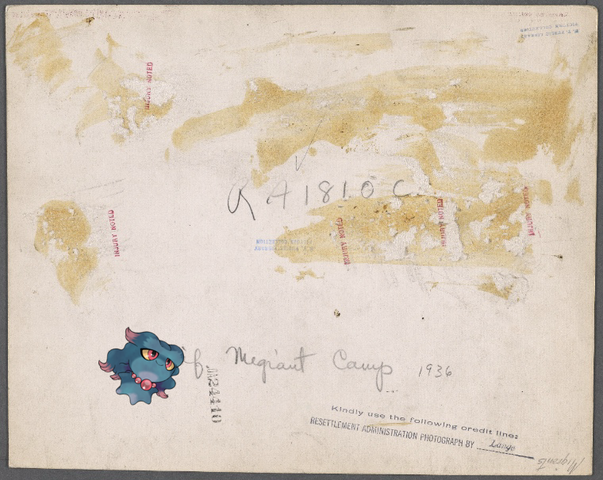

-
Moltres | The orphan boy
-
Flabebe ; Ward, C. L.
-
Tyrogue ; Letter to [Henry Laurens, Philadelphia.]
-
 Happiny @ Down in sunny Alabama (Angeline).
Happiny @ Down in sunny Alabama (Angeline). -
Misdreavus | Migrants' camp. California.!
-
Poliwrath | [Xanten Bible.].
-
Vanillite – EM. 14913
-
Marill, – Cavalerie Regiment Pous. 1784